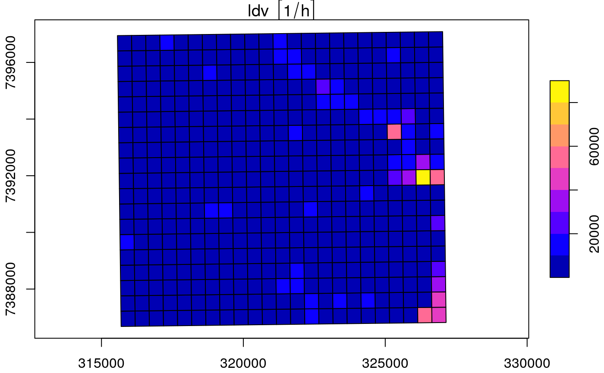
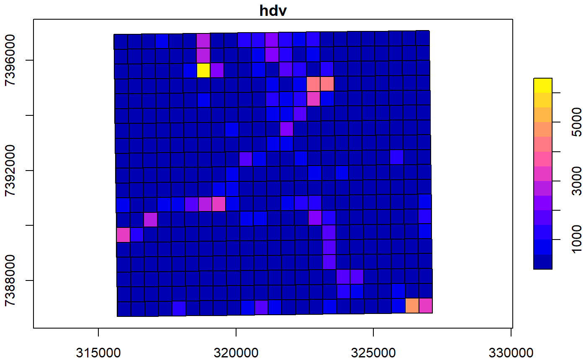

emis_grid.Rdemis_grid allocates emissions proportionally to each grid
cell. The process is performed by intersection between geometries and the grid.
It means that requires "sr" according with your location for the projection.
It is assumed that spobj is a spatial*DataFrame or an "sf" with the pollutants
in data. This function return an object class "sf".
emis_grid(spobj, g, sr, type = "lines")
| spobj | A spatial dataframe of class "sp" or "sf". When class is "sp" it is transformed to "sf". |
|---|---|
| g | A grid with class "SpatialPolygonsDataFrame" or "sf". |
| sr | Spatial reference e.g: 31983. It is required if spobj and g are not projected. Please, see http://spatialreference.org/. |
| type | type of geometry: "lines" or "points". |
When spobj is a 'Spatial' object (class of sp), they are converted into 'sf'. Also, The aggregation of data ise done with data.table functions.
{ data(net) g <- make_grid(net, 1/102.47/2) #500m in degrees names(net) netg <- emis_grid(spobj = net, g = g, sr= 31983) plot(netg["ldv"], axes = TRUE) plot(netg["hdv"], axes = TRUE) }#>